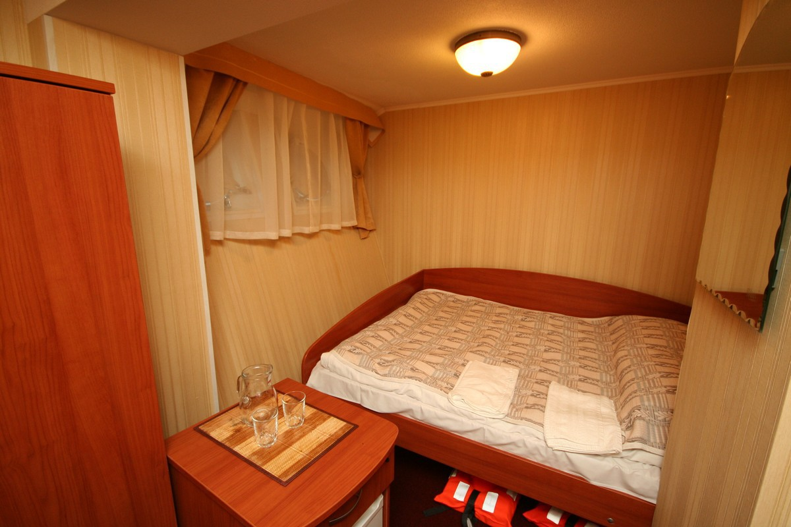

Уютные каюты разных категорий
Категория №1
Двухместная неярусная. Расположение - на верхней палубе. В каждой каюте - две кровати. Каюты имеют индивидуальный балкон. Каюты № 501-508. (каюта №507 с французской кроватью). В каюте №507 возможно размещение на дополнительном месте - раскладушке.
Категория №2 (Люкс)
Двухместная двухкомнатная. Расположение - на шлюпочной палубе. В каждой каюте - две кровати, прикроватная тумбочка, журнальный столик, комод, телевизор. Каюты имеют выход на балкон с палубной мебелью. Каюты № 401, 402. Возможно размещение на дополнительном месте - раскладушке.
Категория №3
Двухместная неярусная. Расположение - на шлюпочной палубе. В каждой каюте - два спальных места. Каюты имеют выход на балкон с палубной мебелью. Каюты № 404, 405, 407, 408, 410. (каюта № 404 с французской кроватью). Возможно размещение на дополнительном месте — раскладушке.
Категория №4
Двухместная неярусная. Расположение - на шлюпочной палубе. В каждой каюте - две кровати. Каюты имеют выход на балкон с палубной мебелью. Каюты № 403, 406, 409, 411-418, 420, 422, 424.
Категория №5
Одноместная. Расположение - на средней и главной палубах. В каждой каюте - одно спальное место, обзорное окно. Каюты № 321-326, 216, 217.
Категория №6
Двухместная неярусная. Расположение - на средней палубе. В каждой каюте - два спальных места, обзорное окно. Каюты № 301-320. (каюты №313, 315 с французской кроватью). В каютах №314 - 319 возможно размещение на дополнительном месте — раскладушке.

Категория №7
Двухместная неярусная. Расположение - на главной палубе. В каждой каюте - два спальных места, обзорное окно. Каюты № 205, 207, 209, 210, 211, 214, 215, 218-225. (каюты №210, 211, 214, 215, 218, 219 с французской кроватью). Каюты 224, 225 с двухъярусной кроватью.
Категория №8
Двухместная неярусная. Расположение - на нижней палубе. В каждой каюте - два спальных места. Каюты № 101-106, 115, 116. (каюты № 101, 102 с французской кроватью).
Категория №9
Трёхместная каюта. Расположение - на нижней палубе(трюм). В каждой каюте - три спальных места, одно из которых на втором ярусе. Каюты № 107, 108, 111-114.